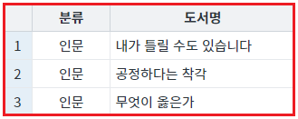

[DataList] 필터가 적용되지 않은 데이터를 대상으로 DataList의 검색 함수 사용하기
1개요
DataList의 속성 'getMatchedFromAllData'의 설정 비교 예제입니다. 이 속성은 DataList의 데이터 검색 함수가 동작할 때 사용됩니다. 속성의 설정 값은 아래의 2가지입니다.
true : DataList의 데이터 검색 함수가 동작할 때 필터가 적용되지 않은 원본 데이터를 대상으로 검색합니다.
false : (기본 설정 값) DataList의 데이터 검색 함수가 동작할 때 필터가 적용된 데이터를 대상으로 검색합니다.
DataList의 주요 데이터 검색 함수는 'getMatched' 또는 'getUnmatched'로 시작되는 함수입니다.
주요 함수 목록은 다음과 같습니다.
getMatchedArray
getMatchedData
getMatchedIndex
getMatchedJSON
getMatchedXML
getMatchedColumnData
getUnmatchedArray
getUnmatchedColumnData
getUnmatchedData
getUnmatchedIndex
getUnmatchedJSON
getUnmatchedXML
2구현된 기능
필터가 적용된 데이터에서 검색하기 - JSON 데이터 받기
필터가 적용된 데이터에서 검색하기 - Row Index 받기
원본 데이터에서 검색하기 - JSON 데이터 받기
원본 데이터에서 검색하기 - Row Index 받기
3예제 테스트 방법
3.1필터가 적용된 데이터에서 검색하기 - JSON 데이터 받기
각 버튼을 클릭하여 반환되는 데이터 형식을 확인할 수 있습니다.
버튼을 클릭하고 '로그 확인'에 출력된 로그를 확인합니다.
(브라우저의 개발자 도구 콘솔에도 로그가 출력되며, 객체 형식으로 확인할 수 있습니다.)
STEP 1. 초기 상태를 확인합니다.
DataList에 할당된 데이터입니다. 각 컬럼에 연결된 JSON 데이터의 KEY는 다음과 같습니다. - label : 도서명 - categoryLabel : 분류
DataList에 할당된 JSON 형식의 데이터
[
{ "label": "책들의 부엌", "categoryLabel": "소설" },
{ "label": "내가 틀릴 수도 있습니다", "categoryLabel": "인문" },
{ "label": "불편한 편의점", "categoryLabel": "소설" },
{ "label": "공정하다는 착각", "categoryLabel": "인문" },
{ "label": "무엇이 옳은가", "categoryLabel": "인문" }
]화면 로딩 후 DataList 컬럼 'categoryLabel'의 값이 '인문'과 일치하는 데이터만 출력되도록 필터가 적용되었습니다.
그림 1.브라우저(Chrome) 실행 예시

STEP 2. 컬럼 '분류'의 값이 '소설'과 일치하는 데이터를 JSON 형식으로 받기
버튼 1.1 컬럼 '분류'의 값이 '소설'과 일치하는 데이터를 JSON 형식으로 받기을 클릭합니다.STEP 3. 실행된 결과를 확인합니다.
필터가 적용된 데이터에 컬럼 '분류'의 값이 '소설'과 일치하는 데이터가 없으므로 빈 배열이 반환됩니다.
로그
[14:22:22] # DatList의 속성 'getMatchedFromAllData'의 설정 값: "false" [14:22:22] 함수 getMatchedJSON 호출 값 : []
3.2필터가 적용된 데이터에서 검색하기 - Row Index 받기
각 버튼을 클릭하여 반환되는 데이터 형식을 확인할 수 있습니다.
버튼을 클릭하고 '로그 확인'에 출력된 로그를 확인합니다.
(브라우저의 개발자 도구 콘솔에도 로그가 출력되며, 객체 형식으로 확인할 수 있습니다.)
STEP 1. DataList에 할당된 데이터를 확인합니다.
각 컬럼에 연결된 JSON 데이터의 KEY는 다음과 같습니다. - label : 도서명 - categoryLabel : 분류
DataList에 할당된 JSON 형식의 데이터
[
{ "label": "책들의 부엌", "categoryLabel": "소설" },
{ "label": "내가 틀릴 수도 있습니다", "categoryLabel": "인문" },
{ "label": "불편한 편의점", "categoryLabel": "소설" },
{ "label": "공정하다는 착각", "categoryLabel": "인문" },
{ "label": "무엇이 옳은가", "categoryLabel": "인문" }
]화면 로딩 후 DataList 컬럼 'categoryLabel'의 값이 '인문'과 일치하는 데이터만 출력되도록 필터가 적용되었습니다.
그림 2.브라우저(Chrome) 실행 예시
STEP 2. 컬럼 '분류'의 값이 '인문'과 일치하는 데이터의 Row Index 받기
버튼 1.2 컬럼 '분류'의 값이 '인문'과 일치하는 데이터의 Row Index 받기을 클릭합니다.STEP 3. 실행된 결과를 확인합니다.
필터가 적용된 데이터를 기준으로 행의 인덱스가 반환됩니다.
로그
[14:42:07] # DatList의 속성 'getMatchedFromAllData'의 설정 값: "false" [14:42:07] 함수 getMatchedIndex 호출 값 : [0,1,2]
3.3원본 데이터에서 검색하기 - JSON 데이터 받기
각 버튼을 클릭하여 반환되는 데이터 형식을 확인할 수 있습니다.
버튼을 클릭하고 '로그 확인'에 출력된 로그를 확인합니다.
(브라우저의 개발자 도구 콘솔에도 로그가 출력되며, 객체 형식으로 확인할 수 있습니다.)
STEP 1. DataList에 할당된 데이터를 확인합니다.
각 컬럼에 연결된 JSON 데이터의 KEY는 다음과 같습니다. - label : 도서명 - categoryLabel : 분류
DataList에 할당된 JSON 형식의 데이터
[
{ "label": "책들의 부엌", "categoryLabel": "소설" },
{ "label": "내가 틀릴 수도 있습니다", "categoryLabel": "인문" },
{ "label": "불편한 편의점", "categoryLabel": "소설" },
{ "label": "공정하다는 착각", "categoryLabel": "인문" },
{ "label": "무엇이 옳은가", "categoryLabel": "인문" }
]화면 로딩 후 DataList 컬럼 'categoryLabel'의 값이 '인문'과 일치하는 데이터만 출력되도록 필터가 적용되었습니다.
그림 3.브라우저(Chrome) 실행 예시
화면 로딩 후 DataList 컬럼 'categoryLabel'의 값이 '인문'과 일치하는 데이터만 출력되도록 필터가 적용되었습니다.
STEP 2. 컬럼 '분류'의 값이 '소설'과 일치하는 데이터를 JSON 형식으로 받기
버튼 2.1 컬럼 '분류'의 값이 '소설'과 일치하는 데이터를 JSON 형식으로 받기을 클릭합니다.STEP 3. 실행된 결과를 확인합니다.
원본 데이터를 대상으로 컬럼 '분류'의 값이 '소설'과 일치하는 데이터가 반환됩니다.
로그
[14:47:23] # DatList의 속성 'getMatchedFromAllData'의 설정 값: "true"
[14:47:23] 함수 getMatchedJSON 호출 값 :
[{"categoryLabel":"소설","label":"책들의 부엌","rowStatus":"R"},{"categoryLabel":"소설","label":"불편한 편의점","rowStatus":"R"}]3.4원본 데이터에서 검색하기 - Row Index 받기
각 버튼을 클릭하여 반환되는 데이터 형식을 확인할 수 있습니다.
버튼을 클릭하고 '로그 확인'에 출력된 로그를 확인합니다.
(브라우저의 개발자 도구 콘솔에도 로그가 출력되며, 객체 형식으로 확인할 수 있습니다.)
STEP 1. DataList에 할당된 데이터를 확인합니다.
각 컬럼에 연결된 JSON 데이터의 KEY는 다음과 같습니다. - label : 도서명 - categoryLabel : 분류
DataList에 할당된 JSON 형식의 데이터
[
{ "label": "책들의 부엌", "categoryLabel": "소설" },
{ "label": "내가 틀릴 수도 있습니다", "categoryLabel": "인문" },
{ "label": "불편한 편의점", "categoryLabel": "소설" },
{ "label": "공정하다는 착각", "categoryLabel": "인문" },
{ "label": "무엇이 옳은가", "categoryLabel": "인문" }
]화면 로딩 후 DataList 컬럼 'categoryLabel'의 값이 '인문'과 일치하는 데이터만 출력되도록 필터가 적용되었습니다.
그림 4.브라우저(Chrome) 실행 예시
화면 로딩 후 DataList 컬럼 'categoryLabel'의 값이 '인문'과 일치하는 데이터만 출력되도록 필터가 적용되었습니다.
STEP 2. 컬럼 '분류'의 값이 '인문'과 일치하는 데이터의 Row Index 받기
버튼 2.2 컬럼 '분류'의 값이 '인문'과 일치하는 데이터의 Row Index 받기을 클릭합니다.STEP 3. 실행된 결과를 확인합니다.
원본 데이터를 기준으로 행의 인덱스가 반환됩니다.
로그
[14:48:25] # DatList의 속성 'getMatchedFromAllData'의 설정 값: "true" [14:48:25] 함수 getMatchedIndex 호출 값 : [1,3,4]
4구현 예시
4.1데이터 검색 함수가 동작할 때 원본 데이터를 대상으로 검색하기
STEP1. DataList의 속성을 정의합니다.
[필수] getMatchedFromAllData="true"
(설정 값)
- true : DataList의 데이터 검색 함수가 동작할 때 필터가 적용되지 않은 원본 데이터를 대상으로 검색합니다.
- false : (기본 설정 값) DataList의 데이터 검색 함수가 동작할 때 필터가 적용된 데이터를 대상으로 검색합니다.
그림 5.웹스퀘어5 SP5 스튜디오의 DataList Property View(속성창) 예시

소스 코드
<w2:dataList getMatchedFromAllData="true" id="dlt_books_1" baseNode="list" repeatNode="map"> <!-- 중략 --> </w2:dataList>
5주요 API
getMatchedFromAllData